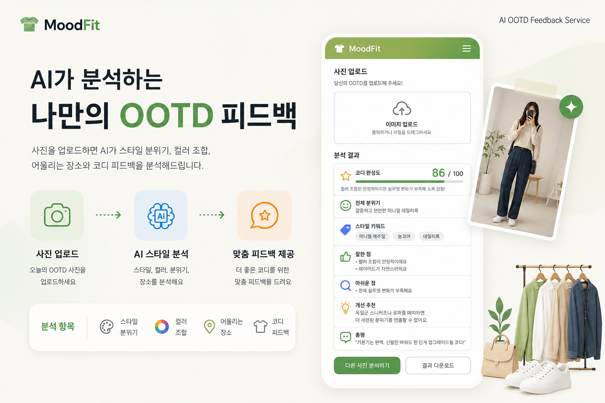

AI OOTD FEEDBACK SERVICE
OOTD 사진을 업로드하면 AI가 스타일 분위기, 컬러 조합, 어울리는 장소와 코디 피드백을 분석해주는 패션 스타일링 서비스

GitHub 계정으로 로그인하면 댓글이 본인 리포의 GitHub Discussions에 자동 저장됩니다.
💬 이 프로젝트 어떠세요?
GitHub 계정으로 로그인하면 댓글이 본인 리포의 GitHub Discussions에 자동 저장됩니다.